Research
My work is in theoretical computer science, centred on structure in complex combinatorial and computational objects. One theme runs through much of my research: structure is what makes problems tractable. I look for structure — for example, sparsity in a known basis, invariance under a group of transformations — and use it to design efficient algorithms for learning and verification.
Recently, I have been exploring similar questions in machine learning. For example, if a model claims to satisfy some property — for instance, a fairness criterion — can an independent auditor verify that claim efficiently, with only restricted access to the model? Or can the behaviour of a complex model be described in terms of a small number of meaningful, structured components? On the other hand, I am interested in how cryptographic techniques can allow model owners to provide efficiently verifiable guarantees about their models, without requiring the verifier to simply trust the owner's claim.
More broadly, I am interested in what ideas from theoretical computer science can contribute to trustworthy AI, particularly through methods for making AI systems more transparent and independently checkable.
Below are outputs from my research.
In all my works, authors are listed alphabetically by last name, following the convention in theoretical computer science, except for works marked with an asterisk (*).
Manuscripts
-
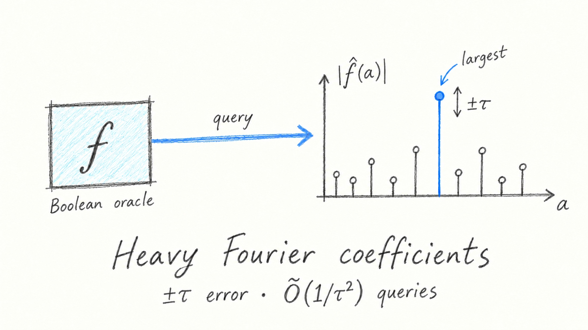
On Nonlinearity Estimation Problem -
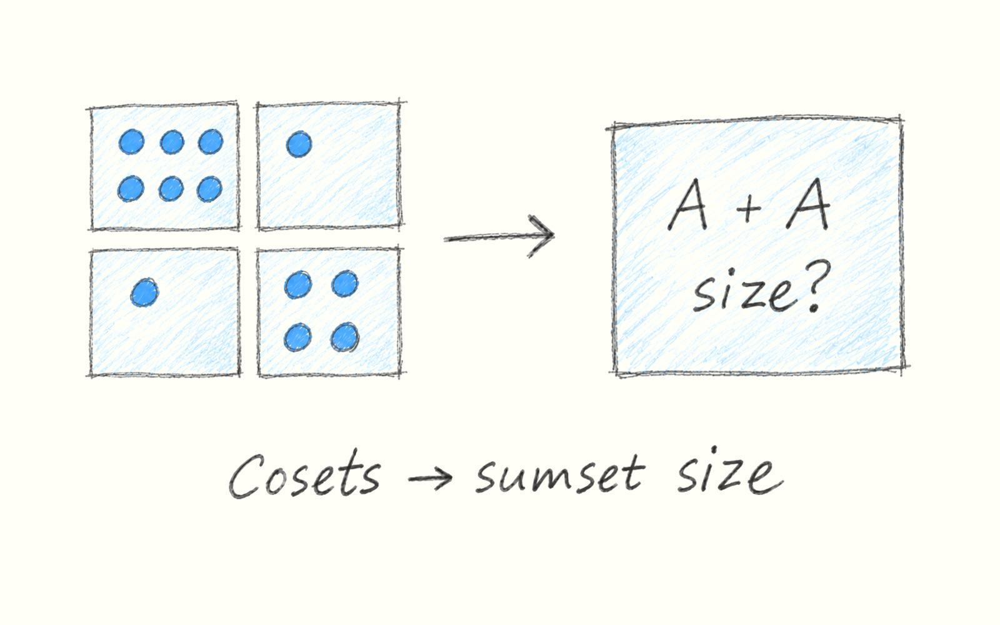
Approximating Sumset Size via Dense Coset Decomposition -
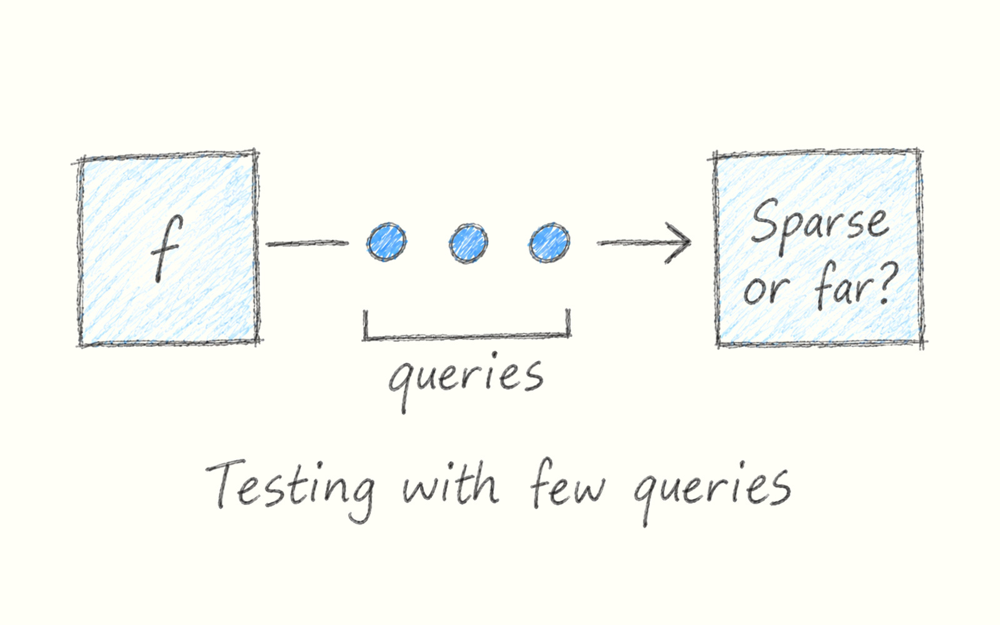
Testing Fourier Sparsity Near Optimally -
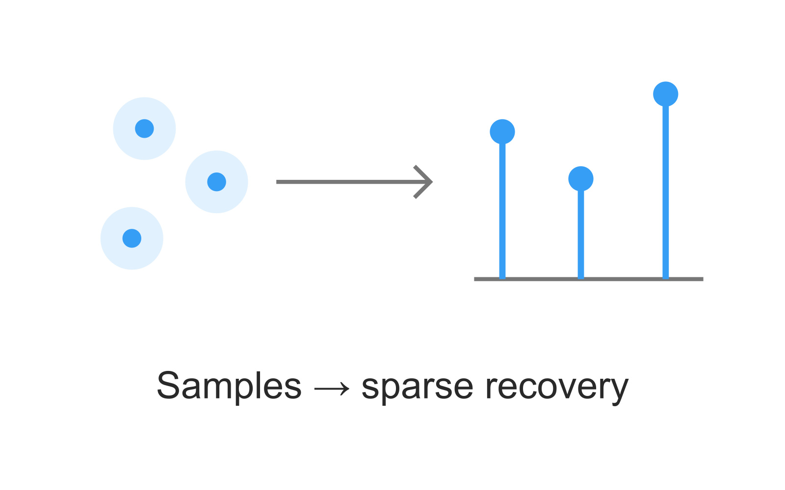
Exact Fourier-Sparse Recovery Made Simple -
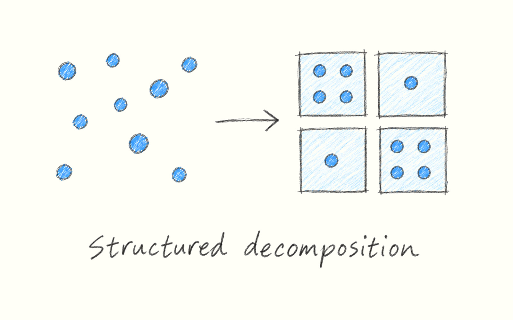
Constructive Arithmetic Regularity for Abelian Groups


Publications
2026
-
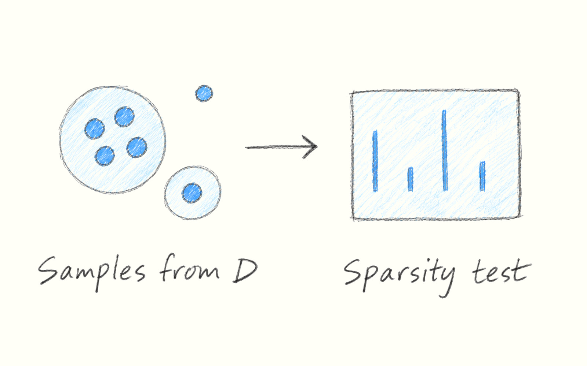
Distribution Free Fourier Sparsity Testing -
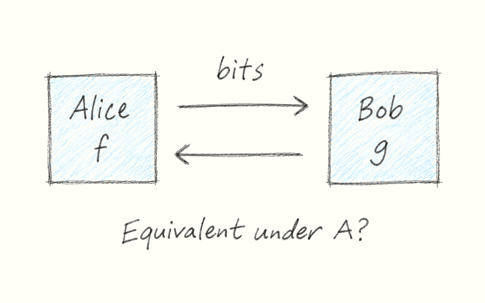
Spectral Shadows: When Communication Complexity Meets Linear Invariance Testing -
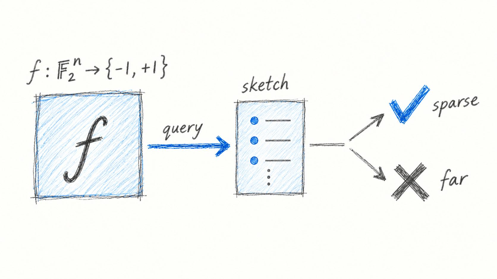
Testing Fourier Sparsity via Implicit Sensing -
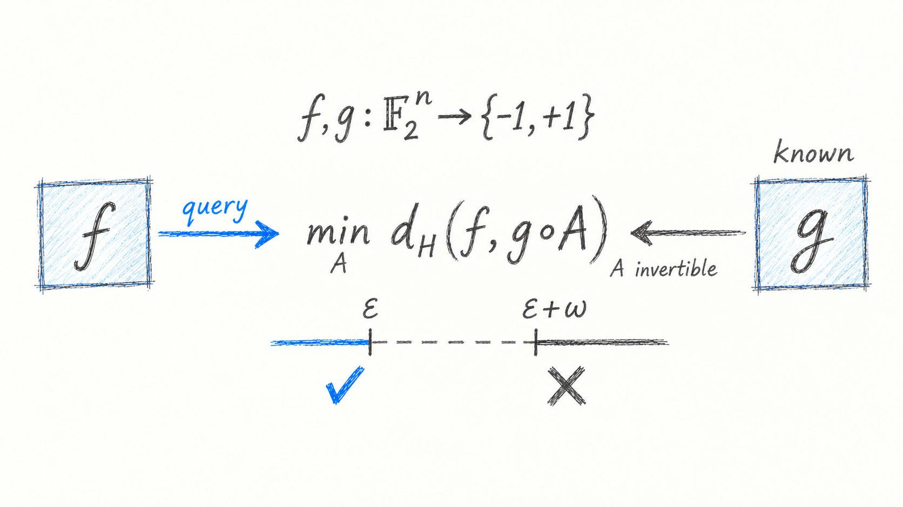
Spectral Norm, Economical Sieve, and Linear Invariance Testing of Boolean Functions


2025
-
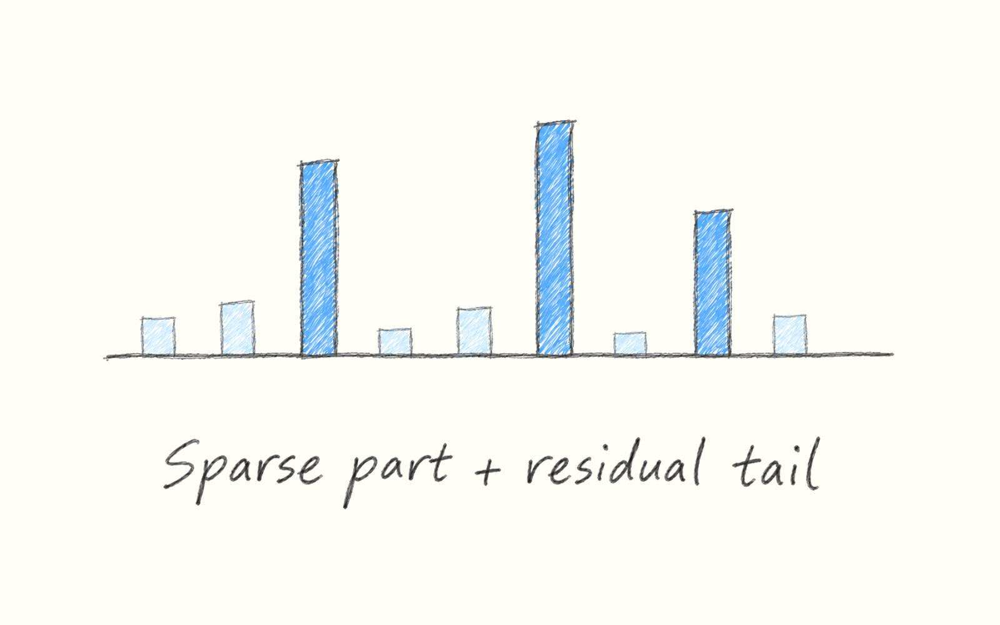
Price of Parsimony: Complexity of Fourier Sparsity Testing -
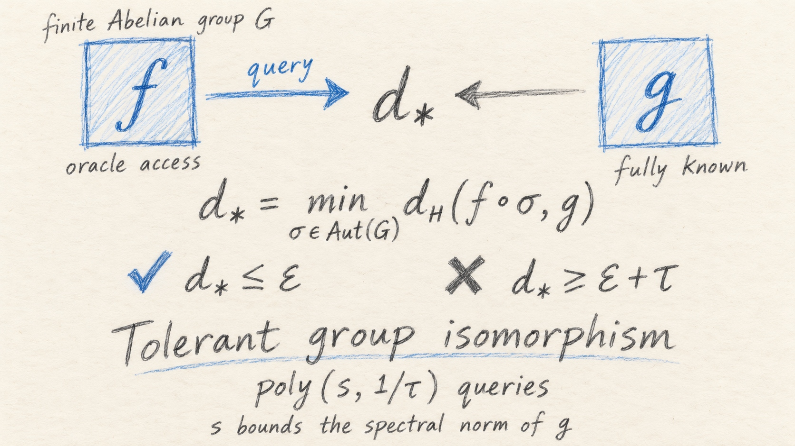
Testing Isomorphism of Boolean Functions over Abelian Groups -
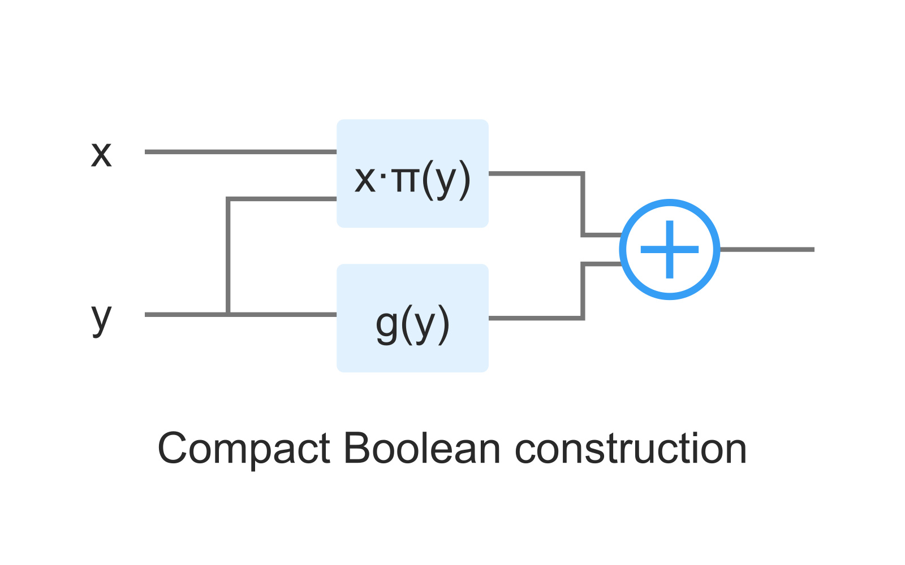
Construction of Maiorana–McFarland type cryptographically significant Boolean functions with good implementation properties*


2022
-
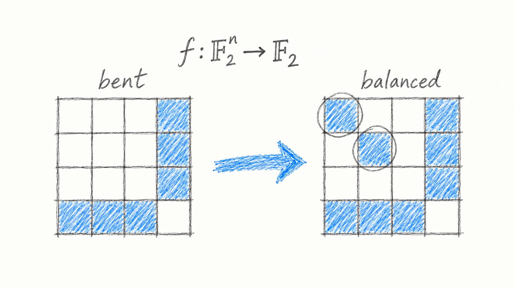
Modifying Bent Functions to Obtain Balanced Ones with High Nonlinearity

2020
-
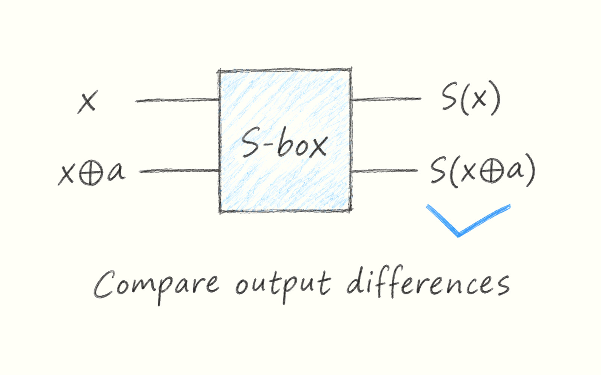
Experimental Results on Higher-Order Differential Spectra of 6 and 8-bit Invertible S-Boxes